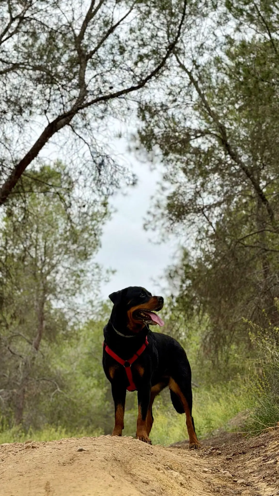

Un Rottweiler cachorro es una de las cosas más adorables y, al mismo tiempo, más desafiantes que puedes tener en casa. Son inteligentes, impulsivos, muerden todo y crecen a una velocidad que asusta. Lo que hagas — y lo que no hagas — en sus primeros meses marcará el carácter que tendrá durante los 9-12 años de su vida. Esta guía no te va a decir que es fácil. Te va a decir cómo hacerlo bien.
¿Cuándo llevarlo a casa?
La edad ideal para adoptar un Rottweiler cachorro es entre las 8 y las 10 semanas de vida. Antes de las 8 semanas, el cachorro necesita estar con su madre y hermanos: aprende a inhibir la mordida, a relacionarse con otros perros y a gestionar la frustración — cosas que ningún humano puede enseñarle igual de bien.
Si el criador o protectora te lo ofrece antes de las 8 semanas, es una señal de alarma. Un buen criador sabe que separar antes daña al cachorro.
💡 Consejo de Maya: Antes de llevarlo a casa, prepara el espacio. Un rincón tranquilo con su cama, un bebedero y un comedero fijos. Los Rottweiler son perros de rutina — la constancia les da seguridad desde el primer día.
El período de socialización — la ventana que no se puede perder
Entre las 3 y las 12 semanas de vida el cerebro de un cachorro de Rottweiler está en su máxima plasticidad. Todo lo que experimente — personas, sonidos, superficies, otros animales, situaciones nuevas — se integra de forma profunda y duradera. Lo que NO experimente en este período también deja huella: el miedo a lo desconocido se instala fácilmente.
Con la madre
Aprende a mordisquear con suavidad, a leer señales de otros perros y las bases de la jerarquía social.
Miedo primario
Período sensible al miedo. Evitar experiencias traumáticas, ruidos fuertes o susto innecesarios.
En tu casa
La ventana de oro. Exposición gradual y positiva a todo: personas, coches, niños, otros perros, veterinario.
La socialización no significa exponerle a todo de golpe. Significa exposición gradual y positiva. Cada experiencia nueva debe terminar bien para el cachorro. Si se asusta, no lo fuerzas — retrocedes un paso y lo intentas más despacio.
Alimentación del cachorro Rottweiler
El Rottweiler cachorro tiene necesidades nutricionales específicas que difieren de otras razas. Su crecimiento es rápido pero debe ser controlado: un crecimiento demasiado acelerado aumenta el riesgo de displasia de cadera y codo.
- Frecuencia: 3-4 tomas diarias hasta los 6 meses, luego 2-3 hasta el año
- Calcio y fósforo equilibrados: No suplementes calcio por tu cuenta — el exceso es tan perjudicial como el defecto
- Pienso "razas grandes cachorro": específicamente formulado para controlar la velocidad de crecimiento
- Sin ejercicio justo después de comer: el Rottweiler es propenso a la torsión gástrica desde cachorro
⚠️ No sobrealimentes al cachorro. Un Rottweiler cachorro gordo puede parecer sano, pero el exceso de peso sobrecarga articulaciones en desarrollo y aumenta el riesgo de displasia. Si puedes palpar sus costillas sin esfuerzo pero no verlas, está en su peso ideal. 👉 Guía completa de alimentación Rottweiler
Primeras visitas al veterinario y vacunas
La pauta vacunal básica del cachorro de Rottweiler en España empieza a las 6-8 semanas con la primera vacuna y se completa con refuerzos. Tu veterinario te dará el calendario exacto. Lo imprescindible:
- Primera visita antes de las 72 horas de llegar a casa — revisión general
- Vacuna séxtuple o polivalente (parvovirus, moquillo, hepatitis, leptospirosis)
- Vacuna antirrábica — obligatoria por ley en España
- Antiparasitario interno cada 3 meses y externo según temporada
- Microchip — obligatorio antes de los 3 meses en la mayoría de comunidades

Las primeras órdenes básicas
Un Rottweiler cachorro puede empezar a aprender desde el primer día que llega a casa. No esperes a que tenga meses. Las sesiones deben ser cortas (3-5 minutos) y siempre con refuerzo positivo. Empezar por:
Su nombre
Di su nombre y, cuando te mire, dale un premio. Es lo más básico y lo más importante. Un Rottweiler que responde a su nombre tiene el 80% de la educación hecha.
Sentado
La primera orden formal. Fácil de aprender y muy útil para gestionar la energía del cachorro en situaciones cotidianas.
Quieto
Imprescindible para la seguridad. Un Rottweiler que no sabe quedarse quieto es un Rottweiler adulto de 45kg que puede causar accidentes sin querer.
Ven aquí
La orden de recall. Puede salvar su vida. Refuérzala siempre que venga — nunca la uses para algo que el perro perciba como negativo.
👉 Guía completa de educación del Rottweiler desde cachorro
Los 7 errores más comunes con un Rottweiler cachorro
❌ Dejarle morder sin corrección
"Es pequeño, no hace daño." Ese mismo cachorro pesará 45kg en 12 meses. La mordida debe inhibirse desde el primer día con un "¡Ay!" claro y retirando la atención.
❌ Cogerle en brazos ante todo lo que le asusta
Parece protector pero es contraproducente. Le estás enseñando que el miedo se resuelve huyendo. Ante un susto, mantén la calma y deja que lo explore a su ritmo.
❌ No socializar por miedo a que se contagie antes de vacunar
El riesgo de un Rottweiler mal socializado es mayor que el riesgo de contagio en entornos controlados. Consulta con tu veterinario cómo hacerlo de forma segura.
❌ Demasiado ejercicio en las primeras semanas
Las articulaciones del cachorro no están formadas. Nada de escaleras repetitivas, saltos ni carreras largas hasta los 18 meses. La regla: 5 minutos de paseo por mes de edad, dos veces al día. 👉 Guía de ejercicio
❌ Cambiar las normas según el día
Si hoy no puede subir al sofá y mañana sí porque está mono, confundes al perro y destruyes la confianza. Los Rottweiler necesitan consistencia absoluta.
❌ Castigarle por accidentes de pis
No entiende por qué le castigas. Solo aprende a esconderse para hacer sus necesidades. Mejor: premio inmediato cuando haga fuera, ignorar los accidentes de dentro.
❌ No preparar la documentación PPP desde el principio
El Rottweiler es un perro PPP desde que nace. La licencia, el seguro RC y el registro municipal hay que tramitarlos cuanto antes. 👉 Requisitos legales completos
Preguntas frecuentes
¿A qué edad se puede llevar un Rottweiler cachorro a casa?
Lo ideal es entre las 8 y las 10 semanas. Antes de las 8 semanas necesita seguir con su madre para aprender conductas sociales básicas que ningún humano puede enseñarle igual de bien.
¿Cuándo empieza el período de socialización?
El período crítico va de las 3 a las 12 semanas. Es la ventana donde el cerebro del cachorro es más receptivo a nuevas experiencias. Aprovéchala con exposición gradual y positiva a todo tipo de personas, sonidos y entornos.
¿Cuánto duerme un Rottweiler cachorro?
Entre 16 y 20 horas diarias en las primeras semanas. El sueño es fundamental para su desarrollo. No interrumpas su descanso — un cachorro que no duerme suficiente es un cachorro irritable y con más tendencia a problemas de comportamiento.
¿A qué edad se puede pasear a un Rottweiler cachorro?
Una semana después de completar su primera pauta vacunal, aproximadamente a las 12-14 semanas. Antes se puede hacer exposición gradual en brazos o en zonas seguras. Consulta siempre con tu veterinario.